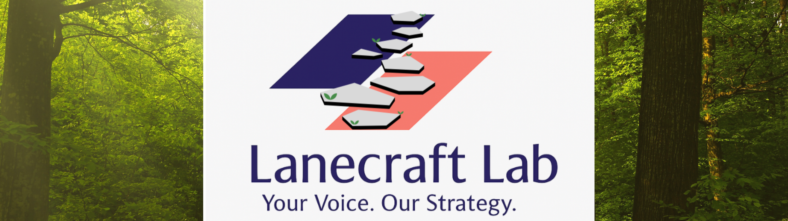

Lanecraft Lab is a strategic advisory and communications firm that helps senior professionals and organizations boost their visibility, share their voice across multiple platforms, and reposition their narratives for customers, distributors, boards and investors. We operate at the intersection of strategy, systems, and storytelling. We design outcomes-driven precision roadmaps for navigating inflection points, whether it's an M&A transaction, a new initiative, a partnership with one or more government bodies, an executive transition, or advisory on operational risk management and governance frameworks.
Client-driven · Purpose-led · Outcome-focused
The Mission
Lanecraft Lab helps B2B and B2C brands scale by placing their ideas, expertise, and innovations in front of target stakeholder groups that can drive top-lines and generate repeat business for our clients. We specialize in earned media visibility across Tier-1, trade, and specialist outlets. Media outlets where our clients have been featured include:
Featured Press
- Published by Founded by Women, October 2025
Our Leadership
Nish Amarnath is the founder of Lanecraft Lab, a strategic advisory and communications firm helping organizations and senior professionals clarify their narratives, strengthen stakeholder relationships, and drive visibility across media, capital markets, and institutional channels. She brings to this work over a decade of experience in capital-intensive, high-stakes sectors — leading editorial teams at Institutional Investor and Industry Dive, advising on communications strategy for global organizations, and steering a public diplomacy initiative for the UK Government. Her writing has appeared in Tier-1 and trade media outlets including The Wall Street Journal, Reuters, TheStreet.com, and S&P Global. Nish majored in Economics with Distinction, and holds postgraduate degrees from the London School of Economics and Columbia University, where she was a James W. Robins Reporting Fellow.
If you'd like to work with us, contact us at comms@lanecraftlab.com
Nish Amarnath
Founder & Managing Partner
Advisory Committee
Lanecraft Lab is building a circle of advisors whose experience spans public diplomacy, international development, capital markets, energy, AI, healthcare, financial services, and organizational transformation. Our advisory members offer insight, perspective, and strategic foresight as we scale our work at the intersection of narrative intelligence, capital strategy, and systems alignment.
Current members include:
Jonathan Ward
International Affairs & Trade Advisor · Chair, Wisconsin World Affairs Council
Jonathan Ward, International Affairs and Trade Advisor, and Chair of the Wisconsin World Affairs Council — Jon brings extensive experience in diplomacy, public affairs, trade policy, and national security strategy. Over the course of his career, he has served in Saudi Arabia, Papua New Guinea, Iraq, Pakistan, India, Brazil, and Washington, D.C., working across market access, investment attraction, supply chains, and government relations.
David Trask
National Director, ARC Facilities · Host, Facility Voices Podcast
David Trask, National Director at ARC Facilities and the host of Facility Voices Podcast — David brings deep facilities and operations insights that ground our strategies in real-world use. He has spent years translating complex building realities into practical decisions for hospitals, schools, stadiums, and public agencies. His ability to bridge ground-level operations with leadership priorities is invaluable for our work at the intersection of strategy, systems, and stakeholder outcomes.
Dr. Jason Baker
Assistant Professor of Medicine & Attending Endocrinologist · Cornell Medical College, New York
Dr. Jason Baker, Assistant Professor of Medicine and Attending Endocrinologist at Cornell Medical College in New York — Dr. Baker founded Diabetes Empowerment International, formerly Marjorie's Fund, a nonprofit advancing education, access, and advocacy for people with Type 1 diabetes. With deep experience across clinical care, global health, and nonprofit leadership, he brings strategic insight to Lanecraft Lab's work at the intersection of health equity, and systems change.
Additional members will be listed here as the committee expands.
Initiate Dialogue
Engage Lanecraft Lab to architect your organization's strategic narrative and drive measurable outcomes.
mail comms@lanecraftlab.com